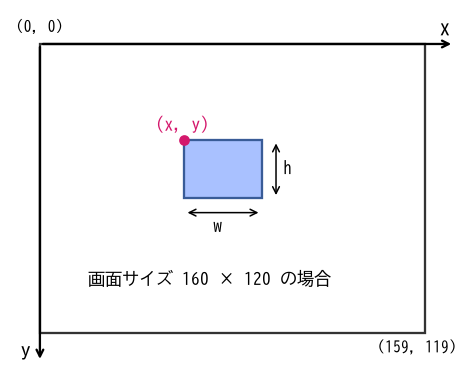
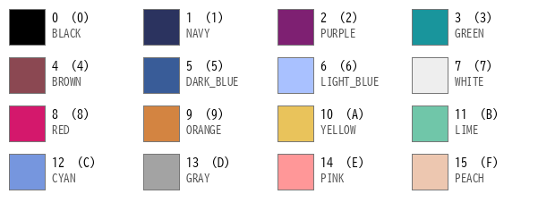
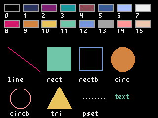
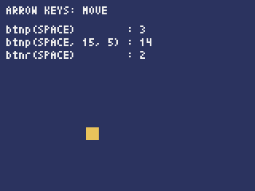
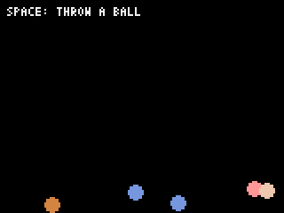
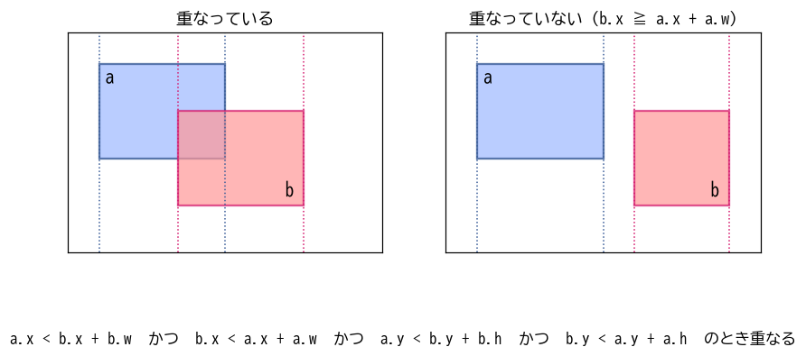
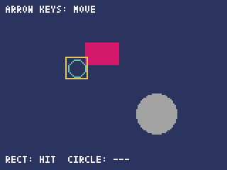
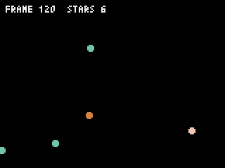

3. ゲームプログラミングの基礎
この章では、題材ゲームから少し離れ、どのゲームにも共通する基礎を小さなサンプルコードで学ぶ。ここで学ぶゲームループ、座標と描画、入力、動き、当たり判定、乱数とタイマーは、第 6 章以降でそのまま使う。
この章のサンプルコードは examples/ch03_basics にある。examples ディレクトリで pyxel run ch03_basics/draw_demo.py のように実行する。
3.1. ゲームループとフレーム
一般的なアプリケーションは、ユーザーが操作するまで待ち、操作されたら処理をする。これに対してゲームは、プレイヤーが何もしなくても敵が動き、時間が進む。そのためゲームは、「入力を調べる」「状態を進める」「画面を描く」という処理を、短い間隔で繰り返し続ける。この繰り返しをゲームループと呼び、ループ 1 回分をフレームと呼ぶ（図 3.1）。
![digraph gameloop {
node [shape=box, style="rounded,filled", fillcolor="#eef3ff", fontsize=11];
edge [fontsize=10];
init [label="pyxel.init()\n初期化", fillcolor="#fff4d6"];
input [label="入力の状態を調べる\n(Pyxel が行う)"];
update [label="update()\n状態を 1 フレーム分進める"];
draw [label="draw()\n現在の状態を画面に描く"];
wait [label="次のフレームまで待つ\n(Pyxel が行う)"];
init -> input [label="pyxel.run()"];
input -> update -> draw -> wait;
wait -> input [label="1/30 秒ごとに繰り返す"];
}](_images/graphviz-f2b9ae1f16bb1361d59f719f03b1cdafa75b06dd.png)
図 3.1 Pyxel のゲームループ
Pyxel では、ゲームループそのものは pyxel.run() が受け持つ。プログラマーが書くのは、1 フレーム分の処理である update() と draw() だけである。1 秒間のフレーム数を fps（frames per second）と呼ぶ。Pyxel の既定は 30 fps で、pyxel.init() の引数 fps で変えられる。30 fps では 1 フレームが約 33 ミリ秒になる。
3.1.1. update と draw を分ける理由
update() には状態を変える処理だけを書き、draw() には描く処理だけを書く。この分け方には次の利点がある。
処理の順番に悩まなくてよい。すべての物体を動かし終えてから描くので、「敵 A は移動後の位置、敵 B は移動前の位置で描かれる」といったずれが起きない。
処理が重いときに描画を省ける。 Pyxel は、処理が間に合わないときに
draw()の呼び出しを省いてupdate()を優先する。このため、draw()の中で状態を変えると、処理の重さによってゲームの進み方が変わってしまう。テストしやすい。状態を変える処理が描画から分かれていれば、画面を使わずに確かめられる（第 8 章）。
経過したフレーム数は pyxel.frame_count で分かる。pyxel.frame_count は update() が呼ばれるたびに 1 増える。
3.2. 座標と描画
3.2.1. 座標系
Pyxel の画面の座標系を図 3.2 に示す。原点 (0, 0) は画面の左上で、x 座標は右へ、y 座標は下へ向かって増える。数学のグラフとは y 軸の向きが逆なので注意する。四角形や画像を描く命令では、左上の座標 (x, y) と、幅 w、高さ h を指定する。

図 3.2 Pyxel の座標系
3.2.2. 色とパレット
描画命令では、色を 0 ～ 15 の番号で指定する。番号と色の対応を図 3.3 に示す。pyxel.COLOR_RED のような定数も用意されているが、本書では番号で書く。Pyxel Editor でも色を番号で扱うからである。

図 3.3 Pyxel の 16 色パレット（番号、16 進数での番号、定数名）
3.2.3. 主な描画命令
図形と文字を描く主な命令を表 3.1 にまとめる。col は色の番号である。
命令 |
動作 |
|---|---|
|
画面全体を色 col で塗りつぶす。 |
|
点 (x, y) を描く。 |
|
(x1, y1) から (x2, y2) まで線を引く。 |
|
左上が (x, y)、幅 w、高さ h の塗りつぶした四角形を描く。 |
|
同じ大きさの四角形の枠を描く。 |
|
中心が (x, y)、半径 r の塗りつぶした円を描く。 |
|
同じ大きさの円の枠を描く。 |
|
3 つの頂点を持つ塗りつぶした三角形を描く。 |
|
左上が (x, y) の位置に文字列 s を描く。1 文字は幅 4、高さ 6 ピクセルである。 |
四角形は左上の座標で、円は中心の座標で位置を指定する点に注意する。リスト 3.1 は、これらの命令を並べて使う例である。実行結果を図 3.4 に示す。
13 def draw(self) -> None:
14 pyxel.cls(0)
15
16 # パレットの 16 色を番号付きで並べる
17 for col in range(16):
18 x = 4 + col % 8 * 19
19 y = 4 + col // 8 * 16
20 pyxel.rect(x, y, 16, 8, col)
21 pyxel.rectb(x, y, 16, 8, 13)
22 pyxel.text(x + 1, y + 9, str(col), 7)
23
24 # 主な描画命令
25 pyxel.line(8, 48, 40, 72, 8)
26 pyxel.text(8, 78, "line", 7)
27 pyxel.rect(48, 48, 24, 24, 11)
28 pyxel.text(48, 78, "rect", 7)
29 pyxel.rectb(80, 48, 24, 24, 12)
30 pyxel.text(80, 78, "rectb", 7)
31 pyxel.circ(124, 60, 12, 9)
32 pyxel.text(116, 78, "circ", 7)
33 pyxel.circb(20, 100, 10, 14)
34 pyxel.text(10, 113, "circb", 7)
35 pyxel.tri(48, 110, 60, 88, 72, 110, 10)
36 pyxel.text(52, 113, "tri", 7)
37 for i in range(8):
38 pyxel.pset(84 + i * 3, 100, 7)
39 pyxel.text(84, 113, "pset", 7)
40 pyxel.text(116, 96, "text", pyxel.frame_count % 15 + 1)

図 3.4 描画命令の例
draw() の最初では、必ず pyxel.cls() で画面を塗りつぶす（14 行目）。Pyxel の画面は前のフレームの絵を覚えているので、塗りつぶさないと、前のフレームの絵の上に重ねて描くことになる。動く物体を描くと、通った跡が残像のように残ってしまう。
3.3. 入力
キーやボタンの状態は、表 3.2 の 3 つの関数で調べる。
関数 |
True を返すとき |
|---|---|
|
key が押されている間、毎フレーム。 |
|
key が押された瞬間のフレームだけ。 |
|
押された瞬間に加え、hold フレーム以上押し続けると repeat フレームごと。 |
|
key が離された瞬間のフレームだけ。 |
key には、pyxel.KEY_SPACE のようなキーボードのキー、pyxel.MOUSE_BUTTON_LEFT のようなマウスのボタン、pyxel.GAMEPAD1_BUTTON_A のようなゲームパッドのボタンを指定する。自機の移動のように押している間ずっと続く動作には btn() を、メニューの決定のように 1 回だけ反応してほしい動作には btnp() を使う。メニューのカーソル移動のように、押し続けたら一定間隔で進んでほしい動作には hold と repeat を指定した btnp() が便利である。
リスト 3.2 は、3 つの関数の違いを確かめるサンプルコードである。スペースキーを押したり押し続けたりして、カウンターの増え方を比べてみてほしい。
19 def update(self) -> None:
20 # btn: 押されている間、毎フレーム True になる
21 if pyxel.btn(pyxel.KEY_LEFT):
22 self.x -= 2
23 if pyxel.btn(pyxel.KEY_RIGHT):
24 self.x += 2
25 if pyxel.btn(pyxel.KEY_UP):
26 self.y -= 2
27 if pyxel.btn(pyxel.KEY_DOWN):
28 self.y += 2
29
30 # btnp: 押された瞬間のフレームだけ True になる
31 if pyxel.btnp(pyxel.KEY_SPACE):
32 self.press_count += 1
33 # hold と repeat を指定すると、押し続けたときに一定間隔で True になる
34 if pyxel.btnp(pyxel.KEY_SPACE, hold=15, repeat=5):
35 self.repeat_count += 1
36 # btnr: 離された瞬間のフレームだけ True になる
37 if pyxel.btnr(pyxel.KEY_SPACE):
38 self.release_count += 1

図 3.5 入力のサンプルコードの実行結果
3.4. 動き
3.4.1. 位置、速度、加速度
物体を動かすには、毎フレーム位置を少しずつ変える。1 フレームあたりの位置の変化量を速度、1 フレームあたりの速度の変化量を加速度と呼ぶ。物理の授業では秒を単位にするが、ゲームではフレームを単位にすると計算が簡単になる。たとえば、x 方向の速度が 2 の物体は、30 fps なら 1 秒間に 60 ピクセル進む。
リスト 3.3 は、ボールに重力をかけて跳ねさせるサンプルコードである。重力は下向きの加速度として表す。
24 def update(self) -> None:
25 # 加速度で速度を変え、速度で位置を変える
26 self.vy += GRAVITY
27 self.x += self.vx
28 self.y += self.vy
29
30 # 壁や床に当たったら、画面内に戻して速度の向きを反転させる
31 if self.x < RADIUS:
32 self.x = RADIUS
33 self.vx = -self.vx
34 if self.x > SCREEN_W - RADIUS:
35 self.x = SCREEN_W - RADIUS
36 self.vx = -self.vx
37 if self.y > SCREEN_H - RADIUS:
38 self.y = SCREEN_H - RADIUS
39 self.vy = -self.vy * BOUNCE
26 行目で加速度 GRAVITY を速度 vy に足し、27 ～ 28 行目で速度を位置に足している。この 2 段階の足し算だけで、ボールは放物線を描いて落ちていく。31 ～ 39 行目は画面の端に当たったときの処理である。位置を画面の内側に戻してから、速度の向きを反転させる。床では速度に BOUNCE（0.8）を掛け、跳ねるたびに勢いが弱まるようにしている。

図 3.6 跳ねるボール（スペースキーでボールが増える）
3.4.2. 斜め移動の速さ
キー入力で物体を動かすとき、右キーで x 方向に 1、下キーで y 方向に 1 進めるとする。右と下を同時に押すと、斜めに進む距離は次のようになる。
つまり、斜めに進むときだけ約 1.41 倍速くなってしまう。これを防ぐには、斜めに進むときの速さを \(1 / \sqrt{2} \approx 0.7071\) 倍にする。題材ゲームの自機でも、この補正を行う（第 6 章）。
3.5. 当たり判定
弾が敵に当たったか、自機が敵にぶつかったかを調べる処理を当たり判定と呼ぶ。2D のゲームでは、物体を四角形や円とみなして重なりを調べる方法がよく使われる。
3.5.1. 四角形どうしの判定（AABB）
辺が x 軸、y 軸と平行な四角形を AABB（Axis-Aligned Bounding Box）と呼ぶ。2 つの AABB a と b が重なっているのは、x 方向と y 方向の両方で区間が重なっているときである（図 3.7）。

図 3.7 AABB による当たり判定
x 方向について考えると、「b が a の右側に完全に離れている（b.x ≧ a.x + a.w）」でもなく、「b が a の左側に完全に離れている（a.x ≧ b.x + b.w）」でもなければ、x 方向の区間は重なっている。y 方向も同じように考え、4 つの条件をまとめるとリスト 3.4 の関数になる。
10def rects_overlap(
11 x1: float, y1: float, w1: float, h1: float,
12 x2: float, y2: float, w2: float, h2: float,
13) -> bool:
14 """2 つの矩形が重なっていれば True を返す (AABB 判定)。"""
15 return x1 < x2 + w2 and x2 < x1 + w1 and y1 < y2 + h2 and y2 < y1 + h1
不等号に < を使っているので、辺がちょうど接しているだけの場合は重なっていないとみなす。
3.5.2. 円どうしの判定
円どうしは、中心の間の距離が半径の和より小さければ重なっている。距離を求めるには平方根が必要だが、両辺を 2 乗して比べれば平方根を計算しなくて済む（リスト 3.5）。
18def circles_overlap(x1: float, y1: float, r1: float, x2: float, y2: float, r2: float) -> bool:
19 """2 つの円が重なっていれば True を返す。平方根を避けるため 2 乗どうしで比べる。"""
20 dx = x2 - x1
21 dy = y2 - y1
22 return dx * dx + dy * dy < (r1 + r2) * (r1 + r2)
collision_demo.py を実行すると、矢印キーで動かす四角形と円が、固定された図形に重なったときに色が変わる（図 3.8）。

図 3.8 当たり判定のサンプルコードの実行結果（四角形どうしが重なっている）
題材ゲームでは、計算が簡単な AABB 判定を使う。ただし、絵の大きさそのままの四角形で判定すると、見た目では当たっていないのにやられたように感じることが多い。そこで、判定に使う四角形を絵より小さくする。この工夫は第 6 章で実装する。
3.6. 乱数とタイマー
3.6.1. 乱数
敵の出現位置などを毎回変えると、ゲームに変化が生まれる。Pyxel には乱数を返す関数として pyxel.rndi(a, b)（a 以上 b 以下の整数）と pyxel.rndf(a, b)（a 以上 b 以下の小数）がある。pyxel.rseed(seed) で乱数の種を決めると、毎回同じ順番で同じ乱数が出る。不具合を再現したいときに使う。
3.6.2. タイマー
「2 秒後に消える」「0.5 秒ごとに敵を出す」といった時間の処理は、フレーム数で数える。30 fps なら 2 秒は 60 フレームである。方法は 2 つある。
pyxel.frame_countを一定の数で割った余りを使う。pyxel.frame_count % 10 == 0は 10 フレームに 1 回だけ True になる。物体ごとに残り時間（または経過時間）の変数を持ち、毎フレーム増減させる。
リスト 3.6 は、10 フレームごとにランダムな位置に星を出し、出現から 60 フレームたった星を消すサンプルコードである。
13class Star:
14 def __init__(self) -> None:
15 self.x = pyxel.rndi(0, 159)
16 self.y = pyxel.rndi(12, 119)
17 self.col = pyxel.rndi(8, 15)
18 self.born = pyxel.frame_count
19
20 def is_expired(self) -> bool:
21 return pyxel.frame_count - self.born >= LIFETIME
22
23 def draw(self) -> None:
24 # 残り時間が短くなったら点滅させる
25 remaining = LIFETIME - (pyxel.frame_count - self.born)
26 if remaining < 20 and pyxel.frame_count % 4 < 2:
27 return
28 pyxel.circ(self.x, self.y, 2, self.col)
29
30
31class App:
32 def __init__(self) -> None:
33 self.stars: list[Star] = []
34
35 def update(self) -> None:
36 if pyxel.frame_count % SPAWN_INTERVAL == 0:
37 self.stars.append(Star())
38 self.stars = [star for star in self.stars if not star.is_expired()]
18 行目で星が生まれたフレームを覚え、21 行目で経過フレーム数を調べている。36 行目は 10 フレームごとに星を出す処理である。38 行目では、寿命が尽きた星を除いた新しいリストを作り直している。リストの要素を for 文でたどりながら remove() で取り除くと、要素を読み飛ばす不具合が起きる。新しいリストを作り直す方法なら、この問題は起きない。この書き方は題材ゲームでも何度も使う。

図 3.9 乱数とタイマーのサンプルコードの実行結果
3.7. まとめ
ゲームは入力、更新、描画を毎フレーム繰り返す。Pyxel では
update()に状態の更新を、draw()に描画を書く。座標の原点は画面の左上で、y 座標は下へ向かって増える。色は 0 ～ 15 の番号で指定する。
押している間の動作には
btn()を、1 回だけの動作にはbtnp()を使う。速度と加速度をフレーム単位で考え、毎フレーム足し合わせて動かす。斜め移動の速さは補正する。
当たり判定は四角形（AABB）や円の重なりで調べる。
時間はフレーム数で数える。